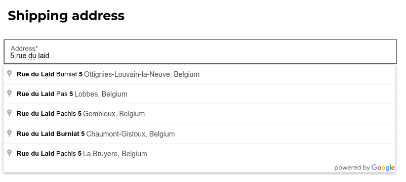

Address autocomplete¶
You can use the Google Places API on your website to ensure that your users’ delivery addresses exist and are understood by the carrier. The Google Places API allows developers to access detailed information about places using HTTP requests. The autocompletion predicts a list of places when the user starts typing the address.
To do so, go to and enable Address Autocomplete in the SEO section.

Insert your Google Places API key in the API Key field. If you don’t have one, create yours on the Google Cloud Console and follow these steps.
Step 1: Enable the Google Places API¶
Create a New Project: To enable the Google Places API, you first need to create a project. To do so, click Select a project in the top left corner, New Project, and follow the prompts to set up your project.
Enable the Google Places API: Go to the Enabled APIs & Services and click + ENABLE APIS AND SERVICES. Search for “Places API” and select it. Click on the “Enable” button.
Note
Google’s pricing depends on the number of requests and their complexity.
Step 2: Create API Credentials¶
Go to APIs & Services –> Credentials.
Create credentials: To create your credentials, go to Credentials, click Create Credentials, and select API key.
Restrict the API Key (Optional)
For security purposes, you can restrict the usage of your API key. You can go to the API restrictions section to specify which APIs your key can access. For the Google Places API, you can restrict it to only allow requests from specific websites or apps.
Important
Save Your API Key: copy your API key and securely store it.
Do not share it publicly or expose it in client-side code.